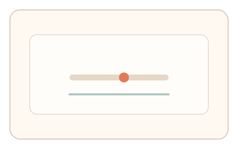
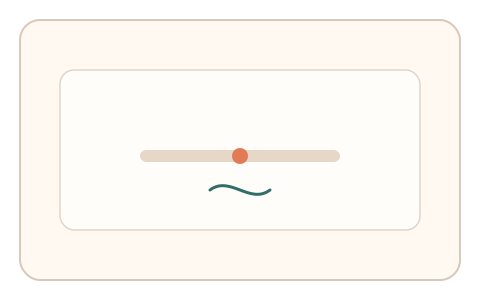
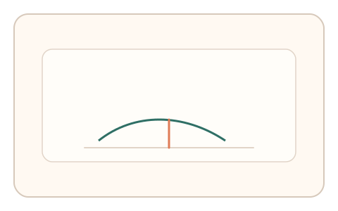

#152
Reverse Brainstorming - Round 1
已扩展
连续值锁
将答案空间扩展为连续值，利用微调轨迹与阈值位置进行判定。
概念原文
把答案空间扩展为连续值（阈值调节、微位移、曲线匹配），并用多次微调轨迹作为判定依据。
把离散选择变成连续控制，暴力穷举不可行。
研究背景
连续值任务依赖感知阈值与精细控制，用户会表现出自然的微调与回拉。相比离散选择，连续空间更难被穷举或直接计算。
核心机制
- 提供连续滑杆/对齐任务。
- 记录微调轨迹与停顿。
- 提取最终阈值位置与轨迹形态。
- 结合多轮相对比较进行判定。
用户流程
- 步骤 1：用户进行连续值调节。
- 步骤 2：完成微调并确认。
- 步骤 3：系统分析轨迹与阈值位置。
判定信号
微调轨迹与回拉
真实用户会出现试探与微纠偏。
阈值位置分布
感知阈值落在稳定区间。
判定逻辑
轨迹形态与阈值需在基线范围；跳跃式搜索或恒定输出判异常。
对抗面
- 脚本二分搜索最优值
- 重放历史微调轨迹
防御与缓解
- 随机化映射与反馈曲线
- 加入噪声与短时扰动
- 多轮相对比较降低穷举
可达性与风险
提供粗粒度调节与替代任务，避免精细操作负担。
- 设备分辨率限制精度
- 微调过多导致疲劳
可视化状态

状态 1：连续调节
连续滑杆与目标范围。

状态 2：微调轨迹
记录微调与回拉过程。

状态 3：阈值判定
比较轨迹形态与阈值分布。
参考资料
Just-noticeable difference
说明阈值与可觉差异。
Psychophysics
说明感知与连续量测。